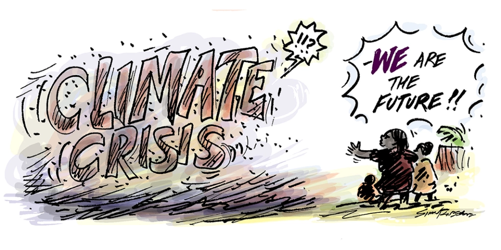

Myth Busted (with what's actually right)
Last Updated: 11:00 AM, GMT, 01.08.2024
- by Dr. Issac V. Jeff, Climate Researcher,
Dept. of Earth Sciences, Columbia University

1. Myth: Climate Change is a Natural Process and Humans Aren't Responsible 🔆
Although there have historically been natural variations in the Earth's climate, the current rate of warming is unprecedented and directly related to human activity. The concentration of greenhouse gases in the atmosphere has increased due to industrial activities, deforestation, and the combustion of fossil fuels, which has contributed to global warming.
2. Myth: It's Cold Outside, So Global Warming Can't Be Real ❄️
Climate and weather are not synonymous. Climate is the average of these circumstances over extended periods of time, whereas weather refers to short-term atmospheric conditions. Winter or a chilly day don't invalidate global warming. In reality, more intense and irregular weather patterns, such as cold snaps, may result from climate change.
3. Myth: Scientists Don't Agree on Climate Change 🧑🔬
More than 97% of climate scientists agree that human activity is the primary cause of climate change and that it is a real phenomenon. The consensus is supported by substantial research and data gathered over many years that provide clear evidence of global warming and its effects.
4. Myth: Climate Change Won't Affect Me 🤷
Explanation: No matter where you live, you are affected by climate change. Among the many ways that climate change affects people worldwide are rising sea levels, harsh weather, shortages of food and water, and heightened health hazards. Even if some regions seem less affected now, the interconnected nature of our world means that no one is immune to its effects.
5. Myth: Renewable Energy Isn't Reliable or Affordable 💡
Technological developments have reduced the cost and increased the reliability of renewable energy sources like wind and solar power. Nowadays, renewable energy is more affordable than fossil fuels in many regions of the world. Furthermore, storage systems can be used to connect renewable energy sources into the energy grid, guaranteeing a steady supply of power.
6. Myth: Carbon Dioxide is Just a Small Part of the Atmosphere, So It Can't Cause Global Warming 💨
Even though carbon dioxide (CO₂) makes up a small percentage of the Earth's atmosphere, it is very effective at trapping heat. Global warming is the result of human activity-induced increases in CO₂ levels, which have intensified the natural greenhouse effect.

7. Myth: Climate Change ls Only a Future Problem 😌
People and ecosystems are already feeling the effects of climate change. The repercussions of climate change are already apparent, ranging from longer droughts and wildfires to more frequent and powerful hurricanes. Delayed action will only make these effects worse.
8. Myth: Planting Trees Will Solve Climate Change 🌴
Even though trees are essential for absorbing CO₂, planting trees won't be sufficient to stop global warming. We also need to switch to renewable energy sources and dramatically cut back on greenhouse gas emissions. Trees are not the solution; they are only one component of the solution.
9. Myth: It’s Too Late to Do Anything About Climate Change ⏰
Even while there are currently some irreversible effects of climate change, it is still possible to stop the worst case scenario. We can lessen the effects of climate change and save future generations by acting now to cut emissions, switch to renewable energy sources, and adjust to changing environmental conditions.
10. Myth: Climate Change is a Hoax ❌
Decades of scientific research have yielded an extensive amount of data in backing climate change. The belief that climate change is a hoax is frequently spread by misinformation or by people who want to keep using fossil fuels regularly. Data from numerous credible sources worldwide confirm to the reality of climate change.
References:
• National Oceanic and Atmospheric Administration (NOAA). "Climate Change: Global Temperature." NOAA Climate.gov,
www.climate.gov/news-features/understanding-climate/climate-change-global-temperature
• Cook, John, et al. "Quantifying the Consensus on Anthropogenic Global Warming in the Scientific Literature." Environmental Research Letters, vol. 8, no. 2, 2013, doi:10.1088/1748-9326/8/2/024024
• International Renewable Energy Agency (IRENA). "Renewable Power Generation Costs in 2020." IRENA,
www.irena.org/publications/2021/Jun/Renewable-Power-Costs-in-2020
• World Meteorological Organization (WMO). "WMO Statement on the State of the Global Climate in 2021." WMO,
public.wmo.int/en/our-mandate/climate/wmo-statement-state-of-global-climate
• Intergovernmental Panel on Climate Change (IPCC). "Climate Change and Land: An IPCC Special Report." IPCC, www.ipcc.ch/srccl/
• United Nations Framework Convention on Climate Change (UNFCCC). "Climate Action and Support Trends." UNFCCC, unfccc.int/climate-action
• National Aeronautics and Space Administration (NASA). "Global Climate Change: Vital Signs of the Planet." NASA, climate.nasa.gov/evidence/